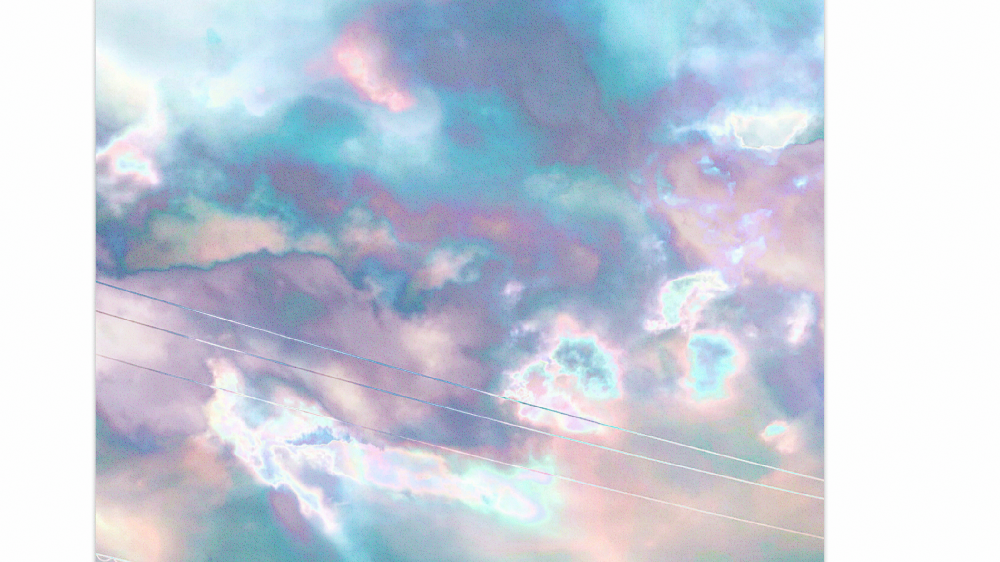
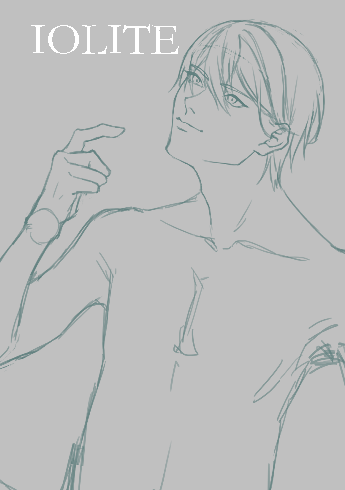

Caution
- ダウンロードした画像の再配布とサイト・クラウドファイルのリンクの共有はお控えください。
- 「あとがき」と「奥付を含む電子版のページ」について、スクリーンショット・ダウンロードなどの複製行為を禁止いたします。ご了承ください。
- 以上に加えて、本サイトのすべての文・画像の転載、スクリーンショットを禁止します。
Introduction
本サイトは、個人サークル「花浅葱の朝に」の相河太郎によって作成されました。

Biography
| 著者 | 相河 太郎(アイカワ タロウ) |
|---|---|
| 作風 |
手塚治虫作品から発想を得たスターシステムを採用して、世界観の異なる小説を複数執筆している。 全体の雰囲気は映画作品や舞台作品の尺を想定して、構成は舞台作品にならい二幕構成としている。 また、スティーブン・キング著「恐怖の四季」から着想し、一幕ごとに四季になぞらえた四部構成を取り入れている。 語り手は一人称だが、章や節のかわりとともに視点が切り替わる。世界観は現実的で、連続した過去・現在・未来について描くことが多い。 ただしスピンオフでない限り、回想シーンを描くことはない。書かない事柄は、読み手が自然と補完できるようにし、奥行きや共感性を用意している。 |
| 小説作品 | 睫毛のおくのアイリス、成長痛、思い出のライラック、なによりも、僕はぼくとキスをする |
| 趣味 | VRoidモデル作成、UTAU調声、舞台作品鑑賞、ぬいぐるみ作製 |
| 好きな作品 | ミュージカル「薄桜鬼」、ヴェラキッカ、舞台「おそ松さん」、舞台「桜姫東文章」、舞台「刀剣乱舞」、舞台「花郎」、黒執事、フルーツバスケット、仮面ライダーフォーゼ、 仮面ライダーゼロワン、ビジネスライクプレイ、戦国鍋系列、LILIUM、Re:フォロワー、あいつが上手で下手が僕で、ミュージカル「マリーゴールド」、舞台「オイディプス王」、舞台「鬼滅の刃」、 残酷歌劇「ライチ☆光クラブ」、KING OF PRISM、ガタカ、流浪の月、少女革命ウテナ、輪るピングドラム etc. |
| 好きな舞台俳優 | 和田雅成、砂川脩弥、中本大賀、磯野亨、笹森裕貴、山﨑晶吾、小坂涼太郎、小南光司、佐奈宏紀、三浦宏規 |
| 好きなキャラクター | 青髪かプラチナブロンドであれば基本的に好き(例：F6カラ松、薄桜鬼の三木三郎、風間千景、刀剣乱舞の次郎太刀) |
| 方針 | 引退されたり亡くなられると悲しいので女の子は推さない。 |
| 舞台を見る動機 | 「睫毛のおくのアイリス」で、舞台俳優が登場する場面があり、勉強のため観劇を始めた。 |
Works
| 睫毛のおくのアイリス | 20万字超で完結した長編小説。画集に収録されている柑田依織を中心とした半群像劇。 |
|---|---|
| 成長痛 | 「睫毛のおくのアイリス」のスピンオフ。主に依織以外の本編の過去と未来が描かれている。 |
| 思い出のライラック | 「睫毛のおくのアイリス」の視点を反転させた作品。 |
| なによりも | 「睫毛のおくのアイリス」と「僕はぼくとキスをする」の登場人物が混合で登場する世界観が異なる作品。 |
| 僕はぼくとキスをする | 「対」に着目して描かれたブロマンス作品。 |
Artwork
高画質版PNGダウンロード
試し読みはこちら↓

Expanations
| 知っている | 表紙。ボクはあなたのことを知っている。口の中を噛む癖、襟足に指を通して引っ張る癖、毎日変わる虹彩の色、ぬるい手の温度、あなたが知らないことまで知っている。表紙にもなっている絵。ラフを描いてから数年経っている。依織は淋（そそぎ）ちゃんを見つめているのに彼女は見ない。それでも、知っている。 |
|---|---|
| もういい | 柑田依織育成計画、早くもゲームオーバー。高校生のときに転機を向かえる依織。何にも期待しなくなったし、他責思考も自責思考もすごい。自他境界も怪しい。7.はこれの続き。 |
| 倅 | 憔悴の「悴」と息子という意味の「倅(せがれ)」をかけた。色々あって憔悴してて、父親の倅であることによって困難に見舞われているので思いついた。 |
| 開 | 右端に淋ちゃんが映ってるのでやむを得ずカット。湯気でだいぶん隠したが未成年の裸体は少しでも映してはならない。頬を切られた傷とかピアスの孔とか心とかが色々開かれる。依織のメンヘルがいい時期だけど淋ちゃんの母性ありきなので自分の足で立ってほしい。同い年とか年上の人ならまだしも未成年の女の子に全部背負わせてはならない。人間はお前の道具ではない。あと未成年と混浴してはならない。涙を水滴にカモフラしてあげた。 |
| 引き摺り込まれて | すべてのあの日の自分に引き摺り込まれて立ち止まる。可愛いだけじゃだめだった依織。 |
| esc. | 逃避行したいね、君と、どこまでも(575)で、元々は淋ちゃんと別れた後再会して通報したら捕まる時期の依織を描く予定だったけど、思いつかなくて海のらくがきしてたら完成した。 |
| photo01 | 撮影シリーズ。らくがきしてたら上手く行ったので、ちょっと直して掲載。ラフの方が奥行きのある顔だったので二段組にした。正面顔の方が綺麗。 |
| photo02 | 撮影シリーズ。これもらくがき。多分、引っ越しして広い家で一人暮らししてる頃。 |
| Birthday'23, Birthday'24, Birthday'25 | バースデーイベントの撮影タイム。24の衣装がこれなのは2023で謎に推しがオーバーオールなのかサロペットなのかをずっと着させられていたため…… |
| 晄 | 依織の知り合いの「晄」。あきらか。依織に光が必要なのは、輪郭が自分で決められないからでしょう。依織がいつまでも学生気分なせいでパッと見何歳かわからなくなる。頬の傷が治ってないので一年目秋。晄（あきら）は依織のお友達。あと、明らめるアキ。そろそろ頭も冴えてきたけど不都合があるから蓋をする。 |
| 叶 | 依織の事務所の先輩。弟は要。姉は奏。綺麗なのに依織が同世代で入ってきたせいでかすんだ不憫な子役。依織のことは好きだけど、許せないことは許せない。 |
| photo03 | ブライダル雑誌にお呼ばれした柑田さん。でも、性産業に関わっていたのでウェディングドレスの事案みたいに燃えたかも。依織がいる世界のことはわかりませんけれど。 |
| 別離 | 結婚式場でしゃがみこんで泣きじゃくっているデカ男。でも、元カノの結婚式でバージンロードを歩くのはさすがに可哀想。 |
| 凪, Calm | ピアスの数で時系列がわかるという変なライフハック。頬に開いていないので爆発前。嵐の前の静けさ。クオリティ不足でカットしたけど、膝小僧が見せたくて短パンにしましたが、恋人が短パン履いてたら嫌かも。 |
| Iolite | 朝起きたとき、こんなのが横に居たら気絶しそう。どこがアイオライトなのか不明。夏は上裸。そういえば推しも配信中に上裸であることをカミングアウトしてきます。七不思議のうちのひとつ。 |
| Destination | 運命と目的を見誤る。ラフにタイトルDstって書いてあって何の略かわからず、数年悩んだ結果Destinationだと思ったらDestinyだった気がする。 |
| photo04 | これを見ると、■中樹のan×nを思い出します。 |
| Birthday’25 | 若手俳優は三十路になると揃いも揃ってセンターパートにするので依織もしてみたら似合わなすぎる。二度としない。推しも2023はずっとこうだったけど、記憶ない。 |
| 裏表紙 | 今まで描いた絵を差の絶対値とって色反転して、を繰り返すとこうなる。ラップみたい。 |
Contact
- 乱丁・落丁などのお問い合わせ、または紙媒体のお取り寄せは
Email：aica0820albaine☆gmail.com (☆→@)までご連絡ください。 - 感想フォーム(外部サイトに遷移します)
→ Google フォーム